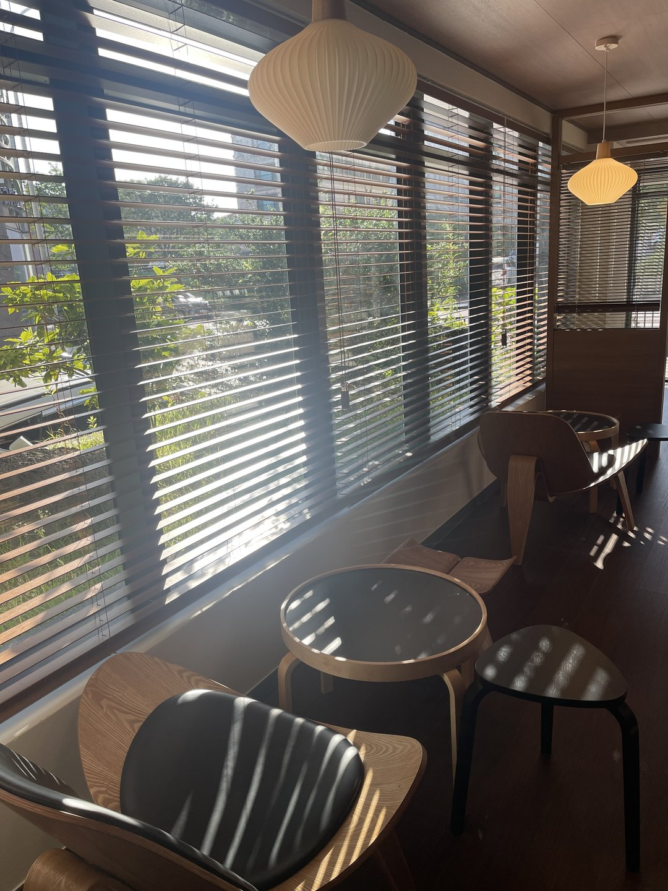
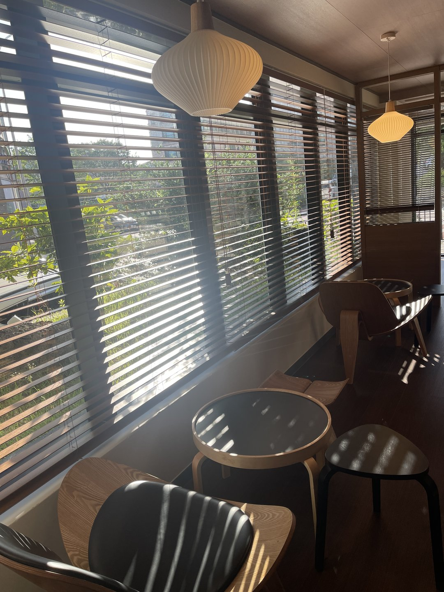
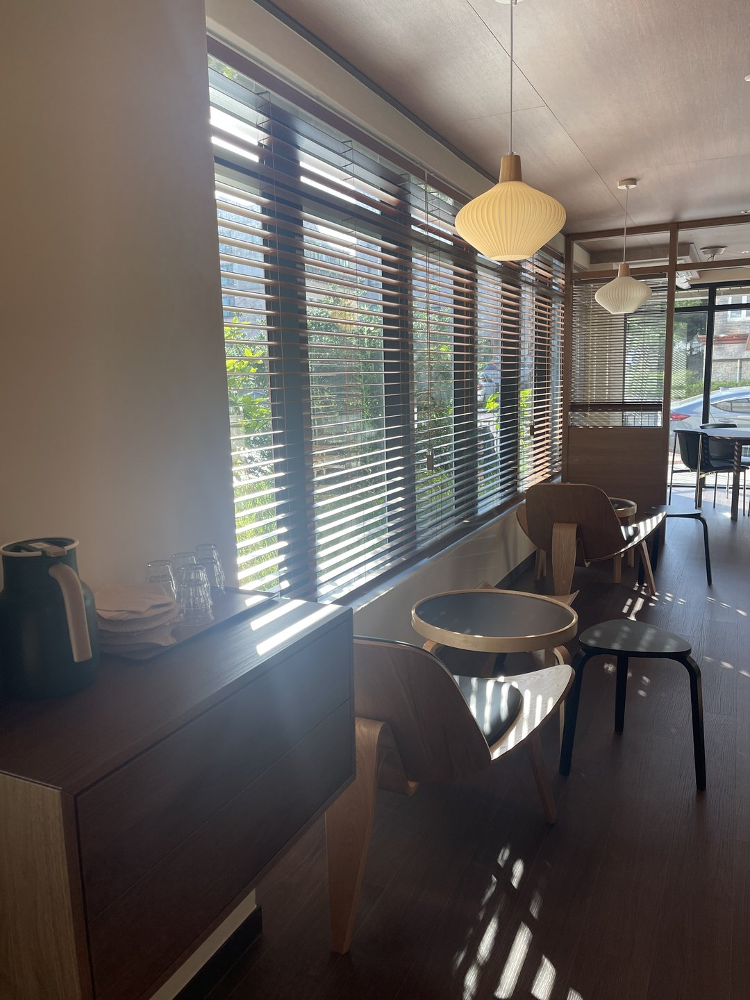
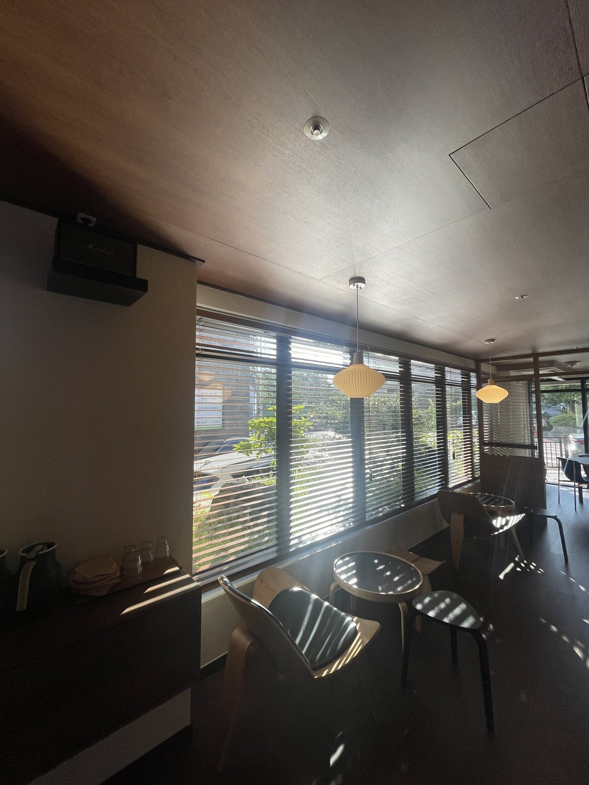
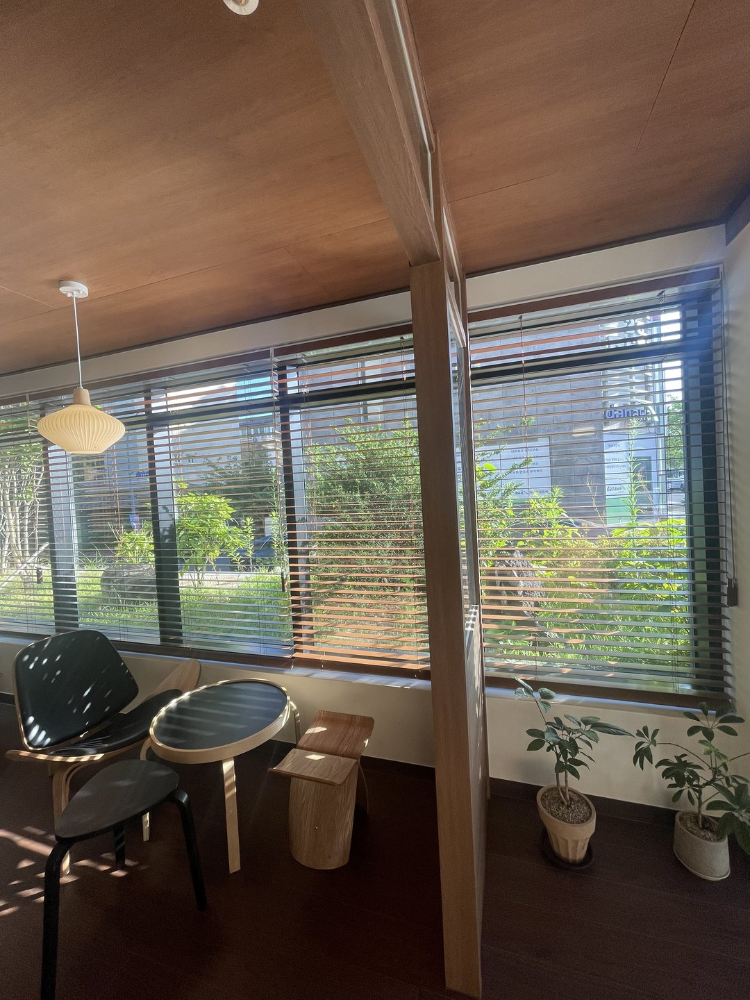
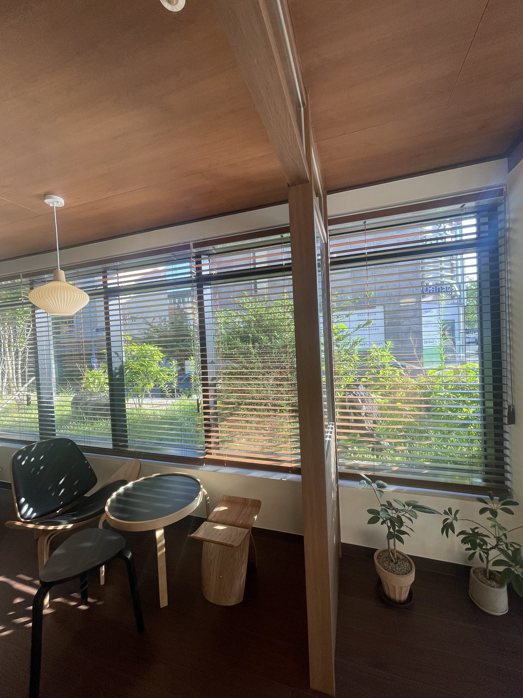
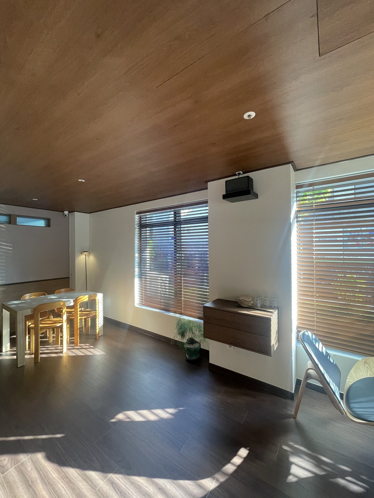
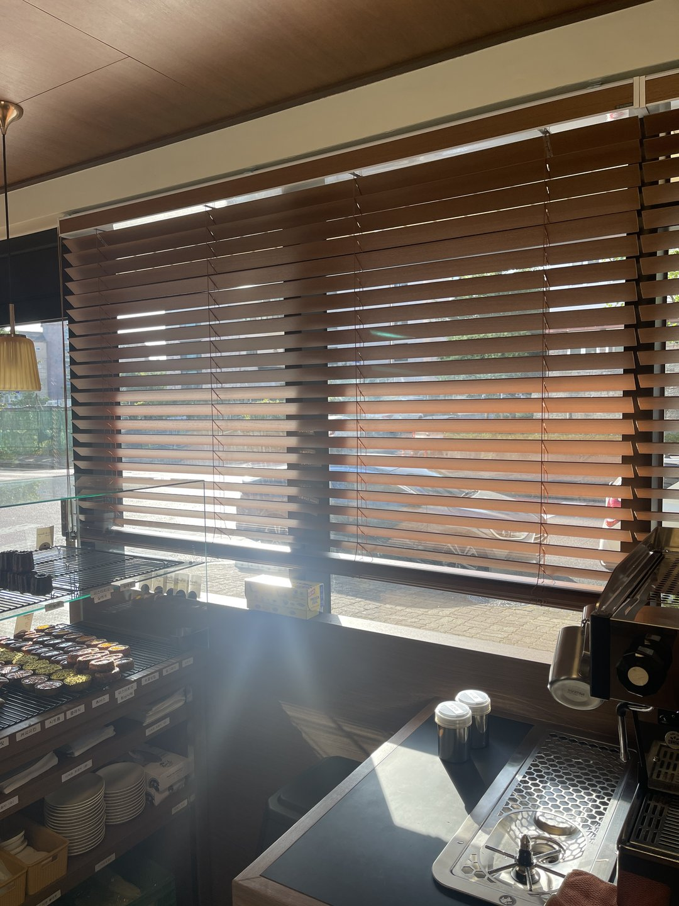

2026년 7월 22일 시공
동대구 상가 카페
통창 우드블라인드 시공후기

동대구에 있는 상가 카페 우드블라인드 시공입니다. 홀 전면이 통창이고, 기둥 사이마다 창이 나뉘어 있는 구조였습니다.
따솜커튼블라인드는 대구·경북 전 지역을 방문 실측하고 시공합니다. 대구·경산·구미·김천·청도·칠곡·성주·고령은 정실장(010-5495-9500)이 직접 나갑니다.
창가 자리가 비는 시간이 있었습니다
카페에서 제일 좋은 자리는 창가입니다. 그런데 특정 시간대에는 그 자리부터 비어 있습니다.
이 현장은 아침에 해가 정면으로 들어오는 방향이었습니다. 사진 촬영 시각이 아침 일곱 시 반인데, 그 시간에 이미 빛이 홀 안쪽까지 들어옵니다.
해가 정면으로 드는 시간에는 눈이 부셔서 오래 앉기 어렵습니다. 노트북을 펴면 화면에 창이 그대로 비칩니다.
그렇다고 창을 다 가리면 이번에는 카페가 답답해집니다. 밖이 보이니까 창가에 앉는 것인데, 막아버리면 그 자리에 앉을 이유가 없어집니다.
그래서 필요한 건 막는 물건이 아니라 각도를 바꾸는 물건이었습니다.

블라인드는 빛을 막지 않고 꺾습니다
슬랫을 눕히면 위에서 들어온 빛이 슬랫 윗면에 닿고 천장 쪽으로 한 번 튑니다. 천장에서 퍼진 빛이 실내로 내려옵니다.
직접 눈으로 오는 빛은 사라지고 실내 밝기는 그대로 남습니다. 밖에서 안은 잘 안 보이는데 안에서는 바깥 나무가 보이는 상태가 만들어집니다.
이 상태가 카페에서 가장 많이 쓰는 상태입니다. 사진에서 바닥과 좌석에 결처럼 떨어진 그림자가 그것입니다.
이 그림자가 손님들이 좋아하는 부분이기도 합니다. 카페는 사진이 찍히는 공간이라 이 부분이 생각보다 크게 작용합니다.

통창을 하나로 길게 뽑지 않았습니다
창이 옆으로 길게 이어져 있으면 통짜 한 짝으로 뽑을 수도 있습니다. 이음선이 없어 사진으로는 제일 깔끔합니다.
그런데 블라인드는 폭이 넓어질수록 무거워집니다. 상부 헤드레일이 길어지면 가운데가 아래로 처집니다.
처진 상태로 계속 눕히고 세우면 가운데 슬랫부터 휩니다. 1년쯤 지나 "가운데가 늘어졌다"는 연락이 오는 게 대부분 이 경우입니다.
카페는 직원이 하루에 여러 번 여닫는 자리입니다. 가정집과 비교가 안 되는 횟수이고, 그 횟수가 그대로 수명이 됩니다.
그래서 기둥을 기준으로 창 단위로 나눠 달았습니다. 대수가 늘어 금액은 조금 올라갑니다.
대신 해가 드는 창만 조절하면 되고, 한 짝이 가벼워 조작이 편합니다. 고장이 나도 그 한 짝만 손보면 됩니다. 영업 중인 카페에서 이 차이는 금액보다 시간으로 다가옵니다.

색은 창틀이 아니라 천장을 보고 정했습니다
이 카페는 천장 전체가 원목 마감이었습니다. 바닥은 짙은 톤이고 벽은 밝은 편이었습니다.
여기에 흰색 블라인드를 달면 창만 따로 떠 보입니다. 천장의 나무색과 바닥의 짙은 색 사이에서 창만 혼자 밝은 면이 됩니다.
반대로 바닥처럼 아주 짙게 가면 낮에도 공간이 무거워집니다. 카페는 낮에 밝아야 하는 공간이라 이건 손해입니다.
그래서 천장 원목과 같은 계열로 맞췄습니다. 창을 보면 천장이 그대로 내려온 것처럼 읽힙니다.
우드블라인드는 슬랫 하나하나가 결을 가진 면이라 이 판단에서 유리합니다. 빛이 들어오면 슬랫 위면과 아래면의 밝기가 달라지면서 결이 살아납니다. 원단으로 같은 색을 내면 색은 맞는데 재질이 안 맞습니다.

코너창은 기둥을 넘기지 않았습니다
홀 한쪽은 창이 코너로 꺾여 있었습니다. 가운데 기둥이 서 있고 그 양쪽으로 창이 붙어 있는 형태입니다.
이런 자리는 기둥을 넘겨서 한 장으로 달면 기둥에 걸립니다. 기둥을 기준으로 끊어서 각각 달았습니다.
이렇게 하면 두 면을 다른 각도로 둘 수 있습니다. 코너는 해가 드는 시간이 면마다 달라서 이 점이 실제로 편합니다.


안쪽 홀과 카운터도 같은 제품으로
안쪽 홀은 창이 작고 벽이 흰색이었습니다. 눈부심 문제가 크지 않았지만 제품을 다르게 가지 않았습니다.
한 공간 안에서 창가리개가 두 종류로 보이면 정리가 안 된 인상이 됩니다. 홀에서 안쪽이 보이는 구조라 더 그렇습니다.

카운터 쪽은 각도를 다르게 잡았습니다. 슬랫을 더 닫아둔 상태로 두었습니다.
에스프레소 머신과 디저트 쇼케이스는 금속과 유리가 많아 빛을 그대로 반사합니다. 직원이 눈부신 것도 문제지만, 메뉴 사진이 예쁘게 안 나오는 게 더 큰 문제입니다.
같은 제품 같은 색이어도 자리마다 쓰는 각도가 다릅니다. 실측할 때 이 부분까지 같이 정해둡니다.

자주 묻는 질문
Q. 카페에는 커튼과 블라인드 중 뭐가 나은가요?
공간에 따라 다릅니다. 통창이 길게 이어진 상가라면 창 단위로 각도를 조절할 수 있는 블라인드가 편한 경우가 많습니다. 아늑한 분위기를 만들고 싶은 작은 카페라면 커튼이 맞을 수도 있습니다.
Q. 우드블라인드는 관리가 어렵지 않나요?
슬랫 위에 먼지가 앉으니 주기적으로 닦아주셔야 합니다. 다만 슬랫이 넓은 제품은 좁은 것보다 닦을 면 수가 적어 시간이 덜 걸립니다. 원목 계열은 물을 많이 쓰지 않는 편이 좋습니다.
Q. 통창을 하나로 길게 뽑으면 안 되나요?
가능하지만 권하지 않습니다. 폭이 넓을수록 무거워지고 헤드레일 가운데가 처집니다. 카페처럼 하루에 여러 번 여닫는 곳은 특히 그렇습니다.
Q. 색은 어떻게 고르나요?
그 공간에서 이미 면적을 크게 차지하는 재료를 기준으로 봅니다. 이 현장은 천장이 원목이라 같은 계열로 맞췄습니다.
Q. 상가도 방염 제품을 써야 하나요?
건축물의 용도와 규모, 시설 구성에 따라 적용 여부가 달라질 수 있습니다. 임대 조건이나 관리 기준에서 요구하는 경우도 있어 견적 단계에서 확인해보시는 것이 좋습니다.
Q. 영업 중에도 시공이 되나요?
가능합니다. 사다리 작업이 있어 창가 자리를 잠시 비워야 합니다. 오픈 전 시간이나 한가한 시간대로 맞춰 진행하는 경우가 많습니다.
Q. 대구 외 지역도 되나요?
됩니다. 대구, 경산, 구미, 김천, 청도, 칠곡, 성주, 고령 일대는 따솜커튼블라인드 정실장(010-5495-9500)이 직접 방문해 실측하고 시공합니다.
마무리
카페 창을 정할 때 실제로 정해지는 건 세 가지입니다. 해가 어느 시간에 어느 창으로 들어오는지, 통창을 몇 짝으로 나눌지, 그 공간에서 이미 큰 면을 차지하는 재료가 무엇인지.
이 셋이 정해지면 제품과 색은 거의 자동으로 결정됩니다. 반대로 이걸 건너뛰고 제품부터 고르면, 달고 나서 아쉬운 부분이 매일 눈에 들어옵니다.
블라인드는 카페에서 하루 종일 손이 가는 물건입니다. 처음에 한 번 제대로 잡아두는 편이 결국 싸게 끝납니다.
비슷한 시공이 필요하신가요?
창 전체가 나오게 찍은 사진 한 장 주시면 방문 전에 견적을 알려드립니다.
천장 마감이 같이 보이게 찍어주시면 색까지 함께 봐드립니다.